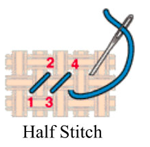
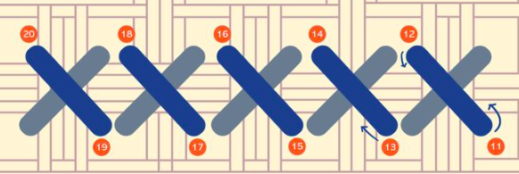
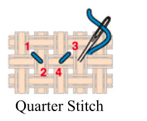
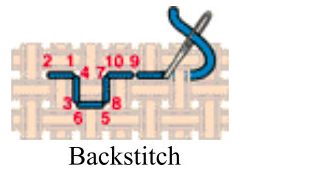

How To Cross Stitch
Written By: Morgan Watkins
For more information please contact me at morganewatkins@yahoo.com
Cross stitch is a rather easy skill to learn. Once you know the basic steps to a cross stitch, success is merely a matter of repetition and application. Knowing the steps to a basic cross stitch will allow you to understand more complicated stitches within the craft.
Before we get into specific stitches, it is important to know some basic steps that must be completed before engaging in any cross stitch.
Cross Stitch Steps for Creating Any Stitch
- You will need a piece of fabric (for beginners, preferably Aida), and embroidery needle, embroidery floss, and an embroidery hoop, which can be bought at any craft store
- Notice the embroidery floss is comprised of 6 strands of fabric. We will need 2 strands to cross stitch.
- Pinching the floss, separate one strand at a time, pulling the thread from the floss.
- Place the 2 stands together.
- Thread the eye of your needle, leaving about a 3 inch tail on one side of the needle. Do NOT tie a knot
- Pick up your hoop and loosen the screw at the top until the inner hoop can be removed from the outer hoop
- Lay the fabric over the smaller hoop so that the center of the fabric is approximately aligned with the center of the hoop
- Place the larger hoop down over the smaller hoop so the fabric is sandwiched between the two hoops
- Tighten the screw to secure the hoops
- Pull the fabric as needed to make the stitching area taught
Common Types of Stitches
Half Stitch
- Start from the back of the fabric and bring the needle up through a hole, with the sharp end of the needle pointing toward you
- Make sure that while you are doing this, you leave about an inch of thread on the back of the fabric. Do this by pulling the needle toward you with one hand and holding the excess thread on the back with a finger on the other hand
- Next we are going to go back through the fabric. Moving to the right bring the needle through the fabric in the hole that is diagonal to the hole you just stitched through. Make sure you are still holding the excess thread on the back of your fabric
- We are now going to come back through the fabric from the back
- pull the needle through the hole that is directly below the stitch you just made
- Before pulling this stitch tight make sure the excess thread that you have been holding in the back is trapped by the stitch
- Now that the extra thread in the back is trapped you no longer need to hold it
- Repeat these steps until you have 4-5 half cross stitches side by side
- To end the stitch flip the fabric to the back
- Using your needle, weave the thread underneath a few of the stitches to secure it, and trim the excess
- 
Cross Stitch
- Follow steps 1-8 listed under "Half Stitch"
- Return across the row making another series of half cross stitches over the row you just stitched (rather than stitching diagonally right, stitch diagonally left)
- Follow steps 9-10 listed under "Half Stitch"
-
- 
Quarter Stitch
- Think of a Quarter Stitch as 25% of a cross stitch
- Notice the fabric squares on the fabric you are working with. This refers to a groups of 4 holes in the fabric that create a square.
- Follow steps 1-2 listed under "Half Stitch"
- Rather than pushing your needle through a preexisting hole on the front of th fabric, we are going to create a new hole.
- In the center of the fabric square, push your needle through, creating a fifth, center hole.
- Pull your needle and thread through.
- Follow steps 9-10 listed under "Half Stitch"
- 
Three Quarter Stitch
- A three Quarter Stitch is simply a combination of a half cross stitch and a quarter stitch. The stitch can slant in any direction.

Back Stitch
- Follow steps 1-2 listed under "Half Stitch"
- "Insert the needle from the front in the hole to the left of the one you brought the floss through and draw through to the back. Each stitch will go "back" from where your needle came up."
- "Insert the needle from the back in the next empty hole to the right; draw through to the front."
- "Insert the needle from the front in the hole to the left of the one you just came through; draw through to the back to complete the second stitch."
- "Repeat to continue working horizontally from left to right. Each new stitch should come up one square away from the previous stitch, then go back down, meeting up with the previous stitch."
- Follow steps 9-10 listed under "Half Stitch"
- All information about the cross stitch backstitch was directly quoted from https://www.thesprucecrafts.com/how-to-back-stitch-lesson-one-984042
- 
For further examples, please refer to the table below
| Type of Stitch |
Finished Product |
| Cross Stitch |
 |
| Half Stitch |
 |
| Quarter Stitch |
 |
| Three Quarter Stitch |
 |
| Back Stitch |
 |
Image sources in the table
- https://www.thesprucecrafts.com/cross-stitch-fabric-count-meaning-983891
- https://i.pinimg.com/originals/21/25/7a/21257a07b018870e5f46082c584a3154.jpg
- http://yarntree.com/040aida.jpg
- http://yarntree.com/040aida.jpg
- https://www.herrschners.com/images/herrschners/content/CCS-Backstitch.jpg
Works Cited
- Barwick, Connie G. “Reading and Understanding a Basic Cross Stitch Pattern.” The Spruce Crafts, 2 Oct. 2019, www.thesprucecrafts.com/understand-cross-stitch-patterns-983953.
- Bowlby, Katie. “A Beginner's Guide to Cross Stitch.” Country Living, Country Living, 20 Sept. 2020, www.countryliving.com/diy-crafts/a18198851/how-to-cross-stitch/.